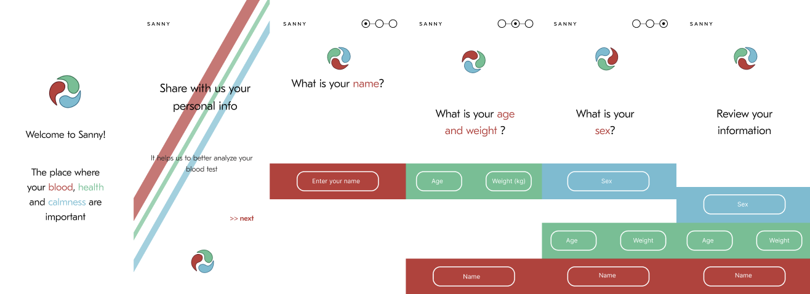
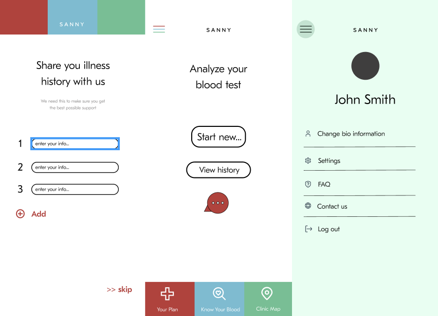
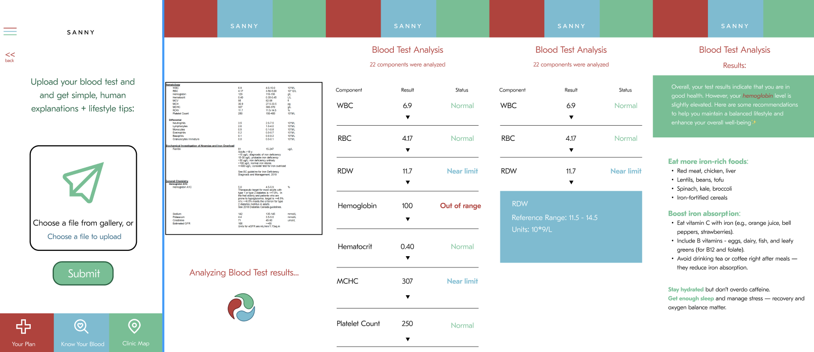

PROJECT 1
Title: SANNY - The place where your blood, health and calmness are important

Overview / Context
Type: 24-hour Hackathon Project
Team: 2 people (me + a friend)
Tools: Figma, ChatGPT API (conceptually), brainstorming boards
Timeframe: 24 hours
Role: UX/UI Designer & Concept Developer
During a 24-hour hackathon, my teammate and I developed an idea for a health-focused mobile app.
The goal was to design an accessible, AI-powered platform that helps people interpret their blood
test results in plain language and get lifestyle advice based on their data.
The Problem/Goal
Many people receive blood test results filled with medical jargon they don’t understand. They either ignore them or turn to unreliable sources online,
which can increase anxiety and confusion.
Our goal was to create an app that:
- Helps users understand their blood test results in clear, simple terms.
- Offers non-medical lifestyle advice to improve health naturally.
- Provides guidance on which doctor to visit and nearest accessible locations if any value looks abnormal.
- Allows users to ask AI health-related questions for reassurance and education.
- Maintain a record of your medical history
Process & Iterations
We developed the concept for an app designed to help users enhance their lifestyle and manage minor health concerns,
particularly for those with busy schedules or limited access to timely medical care. The app provides guidance on lifestyle
improvements and notifies users when it is advisable to consult a doctor promptly.
We quickly researched existing apps (like Carrot Care, Ada, and Health Mate) to identify gaps.
Insights:
- Most apps show only data without explanations
- Few apps combine test analysis, AI chat, and actionable advice
- Users want trustworthy yet friendly guidanc.
Information Architecture & Wireframes
We sketched the main flow:
1. Upload/scan your blood test
2. App analyzes results and highlights any issues
3. Personalized advice and doctor recommendation
4. Optional AI chat for follow-up questions
App Flow Diagram

UI Design
We focused on a calm, trustworthy, medical aesthetic—soft blues,greens and red, with icons for clarity. The minimalist logo clearly reflects the app’s core principles and functionality.
Key screens:

Intro screens guiding users through a quick personal info survey

Screens showing illness history sharing, main dashboard, and user profile/settings menu

Flow showing how users upload their blood test, view the analysis, and see detailed results
Contribution
I was responsible for:
- Defining the core concept and user goals
- Developed the app’s main color palette and logo
- Partially creating wireframes and final UI design in Figma
My teammate focused on UI design in Figma as well and AI integration logic
Solutions & Outcome
Our final solution was an interactive app concept that:
- Simplifies complex medical data into clear visuals and explanations
- Warns users when values approach abnormal ranges
- Suggests vitamins and habits to improve results naturally
- Recommends which specialist to visit and suggest the nearest clinics
- Includes a built-in AI medical assistant for minor concerns
Outcome:
- Positive feedback from hackathon mentors: they appreciated the combination of AI + design empathy
- We completed a Figma prototype within 24 hours
- The app demonstrated potential for real-world health-tech use and could evolve into a start-up project
Personal Reflection
This project taught me how to balance complex information with user-friendly design under time pressure.
I learned the importance of clear visual hierarchy and trust-building design in health-related products.
If I were to continue the project, I’d conduct usability testing with actual users to validate the clarity of
explanations and refine the AI chat flow for accessibility.
Type: 24-hour Hackathon Project
Team: 2 people (me + a friend)
Tools: Figma, ChatGPT API (conceptually), brainstorming boards
Timeframe: 24 hours
Role: UX/UI Designer & Concept Developer
During a 24-hour hackathon, my teammate and I developed an idea for a health-focused mobile app.
The goal was to design an accessible, AI-powered platform that helps people interpret their blood
test results in plain language and get lifestyle advice based on their data.
Many people receive blood test results filled with medical jargon they don’t understand. They either ignore them or turn to unreliable sources online,
which can increase anxiety and confusion.
Our goal was to create an app that:
- Helps users understand their blood test results in clear, simple terms.
- Offers non-medical lifestyle advice to improve health naturally.
- Provides guidance on which doctor to visit and nearest accessible locations if any value looks abnormal.
- Allows users to ask AI health-related questions for reassurance and education.
- Maintain a record of your medical history
We developed the concept for an app designed to help users enhance their lifestyle and manage minor health concerns,
particularly for those with busy schedules or limited access to timely medical care. The app provides guidance on lifestyle
improvements and notifies users when it is advisable to consult a doctor promptly.
We quickly researched existing apps (like Carrot Care, Ada, and Health Mate) to identify gaps.
- Most apps show only data without explanations
- Few apps combine test analysis, AI chat, and actionable advice
- Users want trustworthy yet friendly guidanc.
We sketched the main flow:
1. Upload/scan your blood test
2. App analyzes results and highlights any issues
3. Personalized advice and doctor recommendation
4. Optional AI chat for follow-up questions
We focused on a calm, trustworthy, medical aesthetic—soft blues,greens and red, with icons for clarity. The minimalist logo clearly reflects the app’s core principles and functionality.
Intro screens guiding users through a quick personal info survey
Screens showing illness history sharing, main dashboard, and user profile/settings menu
Flow showing how users upload their blood test, view the analysis, and see detailed results
I was responsible for:
- Defining the core concept and user goals
- Developed the app’s main color palette and logo
- Partially creating wireframes and final UI design in Figma
My teammate focused on UI design in Figma as well and AI integration logic
Our final solution was an interactive app concept that:
- Simplifies complex medical data into clear visuals and explanations
- Warns users when values approach abnormal ranges
- Suggests vitamins and habits to improve results naturally
- Recommends which specialist to visit and suggest the nearest clinics
- Includes a built-in AI medical assistant for minor concerns
- Positive feedback from hackathon mentors: they appreciated the combination of AI + design empathy
- We completed a Figma prototype within 24 hours
- The app demonstrated potential for real-world health-tech use and could evolve into a start-up project
This project taught me how to balance complex information with user-friendly design under time pressure.
I learned the importance of clear visual hierarchy and trust-building design in health-related products.
If I were to continue the project, I’d conduct usability testing with actual users to validate the clarity of
explanations and refine the AI chat flow for accessibility.